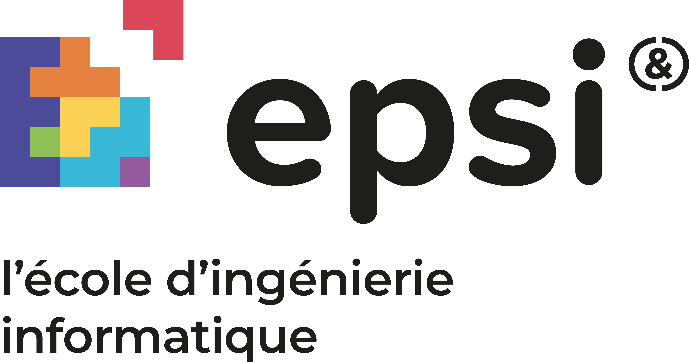

Bienvenue dans la vie d'étudiant intéractif
Nous avons créé ce projet pour visualiser la vie d'un étudiant EPSIEN. Découvrez les détails ci-dessous.
JouerNous avons créé ce projet pour visualiser la vie d'un étudiant EPSIEN. Découvrez les détails ci-dessous.
JouerCe projet a été réalisé pour montrer notre maîtrise des technologies modernes du web. Nous avons utilisé HTML, CSS pour créer une expérience utilisateur interactive et esthétique. Le projet est conçu pour être responsive et s'adapter à différents écrans et résolutions.
Lors du premier jour, nous avons formé notre groupe assez naturellement. Nous avons tous des compétences différentes. Marius & Nathan sommes des devs.
En deuxième année à l'EPSI, je suis en spécialité Développement avec l'option BTS SIO SLAM.
J'ai travaillé sur la partie montage vidéo & intégration des vidéos.
LinkedIn
En deuxième année à l'EPSI, je suis en spécialité Développement avec l'option BTS SIO SLAM.
J'ai travaillé sur le site web, plutôt back, intégration des vidéos, ainsi qu'une partie du front.
J'ai beaucoup travaillé sur l'insertion des boutons et des options autour de notre Jouer & les animations
pour
rendre le site plus fluide.
LinkedIn